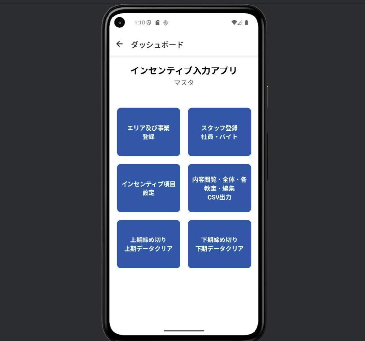
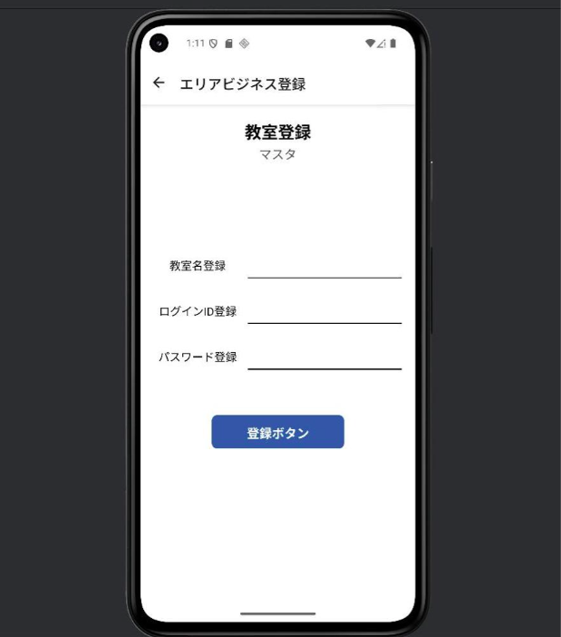
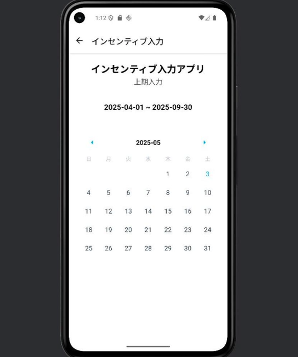

Incentive-Input-App



Incentive-Input-App は、従業員（社員およびアルバイト）へのインセンティブ支給を、 教室や事業単位ごとに管理・記録するための React Native 製アプリケーションです。
ユーザー認証機能を備え、インセンティブの入力・編集、リアルタイムでのデータ確認、 CSV形式でのエクスポートなど、現場業務を効率化する多彩な機能を提供します。
🎯 主な機能
- 🔐 ユーザー認証：セキュアなログイン機能で利用者ごとのアクセスを制御
- 📝 インセンティブ入力・編集：社員・アルバイトごとに簡単に記録・修正可能
- 📊 リアルタイムデータ表示：教室・スタッフ別のインセンティブ状況を即時に確認
- 📁 CSVエクスポート：ワンタップでCSV形式に出力、集計や外部処理にも対応
⚙️ 使用技術
- フロントエンド：React Native（Expo、TypeScript）
- バックエンド：Node.js（Express）
- データベース：SQLite
🧩 想定される利用シーン
- 教育機関や学習塾におけるスタッフインセンティブの管理
- 多拠点でのインセンティブ支給の統一的な運用
- 管理者と現場スタッフ間の円滑なデータ共有
🚀 今後のアップデート予定
- 月次・年次単位での集計機能の追加
- クラウドサービスとの連携によるデータの一元化
- Webブラウザ対応版の展開